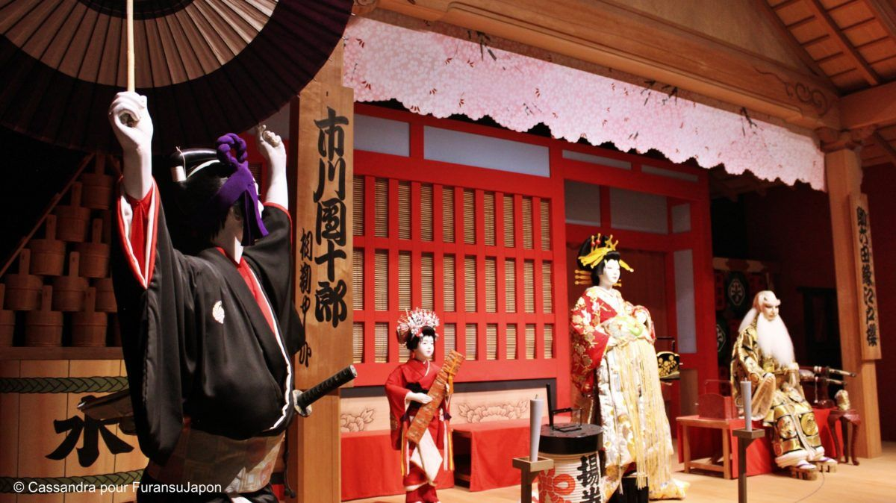

Le Kabuki est une forme de théâtre traditionnel japonais qui a vu le jour à l’époque Edo, au début du XVIIe siècle, où il était particulièrement prisé des citadins. Joué à l’origine par des hommes et des femmes, il a été par la suite interprété par des troupes exclusivement masculines, tradition qui a perduré jusqu’à nos jours. Les acteurs spécialisés dans les rôles féminins sont appelés onnagata. Il existe deux autres grands types de rôles : l’aragoto (style violent) et le wagoto (style doux). Les pièces de Kabuki illustrent des événements historiques et le conflit moral lié aux relations affectives. Les acteurs s’expriment d’une voix monotone et sont accompagnés d’instruments traditionnels. La scène est équipée de divers dispositifs tels que des plateaux tournants et des trappes par lesquelles les acteurs peuvent apparaître et disparaître. Une autre spécificité du Kabuki est la passerelle (hanamichi) qui s’avance au milieu du public.
Le théâtre Kabuki se distingue par sa musique particulière, ses costumes, ses machineries et ses accessoires, ainsi que par son répertoire, un style de langue et de jeu, tel le mie, où l’acteur se fige dans une pose caractéristique pour camper son personnage. Le kesh¯o, le maquillage propre au Kabuki, est un élément de style aisément reconnaissable, même par ceux qui sont peu familiarisés avec cette forme d’art. Après 1868, quand le Japon s’est ouvert aux influences occidentales, les acteurs se sont attachés à améliorer la réputation du Kabuki auprès des classes supérieures et à adapter les styles classiques aux goûts modernes. Aujourd’hui, le Kabuki est la forme de théâtre traditionnel japonais la plus appréciée.